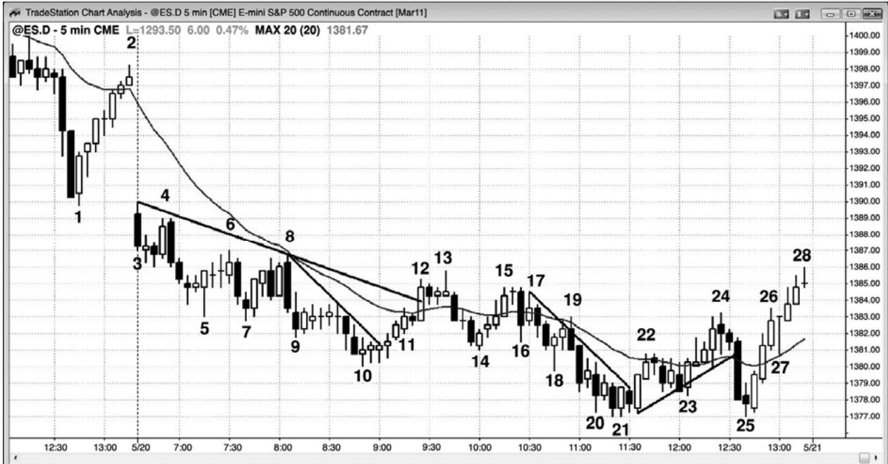
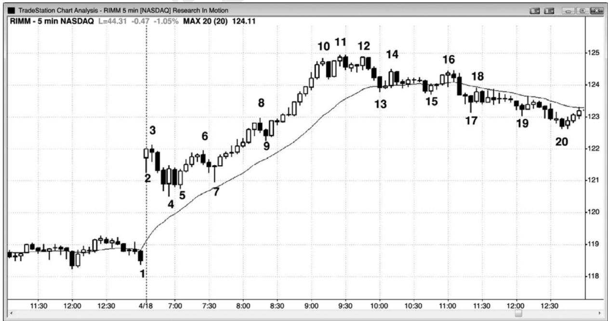

第13章 20缺口棒¶
第 13 章 20 缺口棒
当市场连续 20 棒或更长时间位于均线一侧，而且没有触及均线时，趋势是非常强劲的，但也是过度的，可能不久就会向均线回撤，形成一个20缺口棒架构。如果回撤前没有明确的趋势反转，那么第一次触及均线是一个高胜率刮头皮架构，预期市场会测试趋势极点。有些交易者会使用限价单或市价单在均线上或略高于、略低于均线处入场，但更好的做法是等待价格行为入场（向趋势方向的反转和止损入场），以防回撤大幅超越均线。20 棒并没有什么神秘之处。它只是一个有用的向导，提醒你趋势强劲。你可以任意选择较大的棒线数目，产生一个架构，通常与 20 棒相同，它也会在其他时间框架上有效。一轮趋势可能极强，但每30分钟都会触及均线，而一轮趋势可能偏离均线4小时，只是突然反转进入反向趋势。当那种情况发生在 5 分钟图上，市场已经至少有两个小时没有触及均线时，过去我常常称之为偏离均线两小时架构，或简记作 2HM。由于相同的在所有时间框架上有效，所以更为有用的做法是用棒线数代替小时数。20 棒可以是一天中任意时间段的 20 条棒线，不一定非得位于头两个小时内。
一旦你注意到 20 条连续缺口棒出现，那么就要准备在每次触及均线时做反向交易。经过一次或多次均线测试后，很可能会出现一次穿过均线的测试，在均线的另一侧形成一条均线缺口棒，那一棒和均线之间将形成一个缺口。准备在第一缺口棒做反向操作（在多头趋势中，如果高点低于指数均线，就在前一棒高点上方1个跳动处买进）。如果第一次入场失败，那么就在第二次入场买进，前提上出现二次入场。像所有架构一样，如果头两个架构失败，那么不值得在第三次买进，因为市场此时很可能是在通道之中，而不是在形成反转。由于你做的是顺势交易，所以应该把部分头寸波段化，因为市场的运动幅度可能比你认为的要大得多。股票中的均线测试特别可靠，一天中常常提供非常棒的入场。但是，如果第一均线缺口棒形成于一个强趋势反转之后，那么它很可能失败，因为趋势现在已经反转，那个缺口棒是前一趋势的一个架构，而前一趋势已经结束。
图 13.1 20 缺口棒

当一轮趋势非常强劲，连续20棒或更多棒没有触及均线时，很多交易者将准备在第一次向均线的回撤入场，持有头寸，预期市场测量趋势极点。在图 13.1 中，棒 11 是 20 多棒来第一条触及均线的棒线，由于空头趋势没有形成明确的底部，所以交易者们在略低于均线、均线、略高于均线处设定限价单入场空头交易。虽然截止棒 11 的上涨运动由 6 条连续的多头趋势棒构成，在棒 10 没有明确的底部，于是交易者们正在均线附近寻找做空机会。那些做空操作使得棒 11 之后形成一条小型空头内包棒，而不是一条强空头趋势棒，这就意味着大部分交易者相信这一点处的反弹太强，不能做空。然而，在棒13下方的二次入场（第一个入场机会是在一棒之前），空方变得非常积极。因为截止棒 13 的上涨运动非常强劲，交易者们正在寻找一个更高低点和二次向上测试，所以大部分空头在棒 14 对棒 10 空头趋势低点的更高低点测试离场。
P131
棒 8 没有触及均线，但仍然是对均线的一个两条腿测试。空头如此急切地做空，他们在均线下方两三个跳动处设定限价单，因为他们不确定反弹会触及均线。如果他们确定反弹将触及均线的话，那么他们会把限价单设在均线下方 1 个跳动处做空，当市场触及均线时，他们的交易就入场了。当市场在略低于均线处向下反转时，空头非常积极。当测试转变为大型空头趋势棒时，这尤其明显，比如在这里。
棒 7、9 和 10 形成一个空头楔形，这是一个反转形态。棒 10 信号棒的强度并不足以说服交易者们市场已经向上反转，所以他们仍然在均线附近寻找做空架构。底部的强度足以形成第二条上涨腿，至棒 15 结束，与棒 13 形成一个双重顶空头旗形。
这张图表的更深入讨论
图 13.1 中，市场以一条空头趋势棒向下跳空，所以那个突破可能已经变为一轮开盘起空头趋势。两棒之后，突破失败，但是那个架构没有强到可以买进。相反地，空头应该离场等待。棒 4 与棒 3 形成一个双重顶空头旗形，与后一棒形成一个双棒反转。交易者们可能会使用止损单在棒 4 下方做空，也可能选择等待。下一棒是一条空头趋势棒，跌破棒 4，使棒 4成为一个波段高点。由于现在既出现一个波段低点，又出现一个波段高点，而且开盘区间小于近期平均日区间的三分之一，所以市场处于突破状态。多头将使用止损单在交易区间向上突破时做多，空头将使用止损单在区间下方 1 个跳动处做空。突破应该拥有坚持到底，那一天常常成为一个趋势日，比如在这里。
虽然上半天空方表现出很强的力量，但是多方几次突破空头趋势线。截止棒 13 的反弹上破空头趋势线之后，他们能够在截止棒 25 的下跌止损猎杀后推动市场上涨，棒 25 与棒 21 形成一个双重底。对于棒21到棒24的空头旗形的突破，它也是一个最终旗形买进架构。棒13也是空头趋势中均线上方的第一缺口棒，所以是一个卖出架构（见下一章）。

如果市场已经 20 棒或更多棒没有触及均线，但首先出现了一个高潮，那么 20 缺口棒架构可能不会引起反弹和对极点的测试。如图 13.2 所示，动态研究公司（RIMM）形成一波抛物线形多头趋势，至棒10结束。由于抛物线形运动不能持久，所以它是一种类型的高潮，任意高潮之后通常都至少是一波两条腿的调整，至少持续 10 棒，甚至可能是趋势反转。这使得向均线的单腿调整成为风险很高的做多架构。
P132
这张图表的更深入讨论
在图 13.2 中，虽然多头可能在棒 13 处使用设在均线处的限价单刮取小额利润，但是在高潮之后的空头尖峰买进是非常冒险的，因为应该预期至少出现两条腿的下跌。棒15是一个更好的架构，因为它是第二条下跌腿，它拥有一条不错的多头反转棒，但是它在棒 16 低点 2失败。棒 16 也与棒 14 形成一个双重顶空头旗形。由于市场处于一段紧凑的交易区间内，所以这不是一个很强的做空架构。
截止棒 10 的上涨运动中，棒线之间的重叠非常小，而且收盘靠近它们的高点。从棒 7 到棒10的整个反弹陡峭，那就是一个多头尖峰。尖峰之后是暂停或回撤。这里，回撤以三条空头趋势棒开始，形成一个下跌尖峰，至棒 13。当出现一个多头尖峰，然后出现一个空头尖峰时，这是一个高潮反转，是一种类型的双棒反转（但可能仅在较高时间框架的图表上比较明显）。当多方持续买进试图制造一条多头通道，空方持续卖出试图制造一条空头通道时，市场通常会横盘整理一段时间。这里，空方获胜，市场跌破棒 13 和棒 15 双重底，形成一波向下的测量运动。当市场两次尝试做某事情失败时，它通常会尝试做相反的事情。
虽然这里没有给出，但是多方有能力制造一条从棒 20 低点开始的强多头通道，从棒 20开始的上涨腿，刚好与棒 4 到棒 10 第一条腿的高度相等，形成腿 1=腿 2 测量运动。截止棒10 的多头上涨尖峰比截止棒 13 的空头下跌尖峰要大很多，它也是更高时间框架上的一个多头尖峰。在这张 5 分钟图上，空头尖峰得到了它的通道，然后，在次日的一张更高时间框架图表上，多头尖峰得到了它的通道（未给出）。
高潮也有一个小型的楔形顶部。虽然棒 12 低于棒 11，但这仍然像是一个楔形，其中空方如此积极，他们防止第三推超越第二推。有些交易者可能把棒 10 后面的空头棒看作是对多头通道的第一次向下突破，然后把棒 11 看作是向更高高点的突破回撤。这种价格行为并未强到可以做空，但足以令多头减仓或离场。棒12是一个双棒反转形态的第一棒，它是一个更低高点，或者说与棒 11 形成一个双重顶。交易者们应该在那第二棒下方做空，那是一条强空头趋势棒，最低目标是测试均线。棒 17 是低于均线的第一缺口棒，但多头趋势已经演变为交易区间（市场已经横盘20到30棒），所以这不再是一个可靠的买进架构。